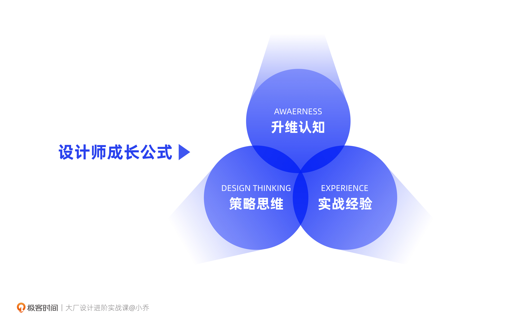
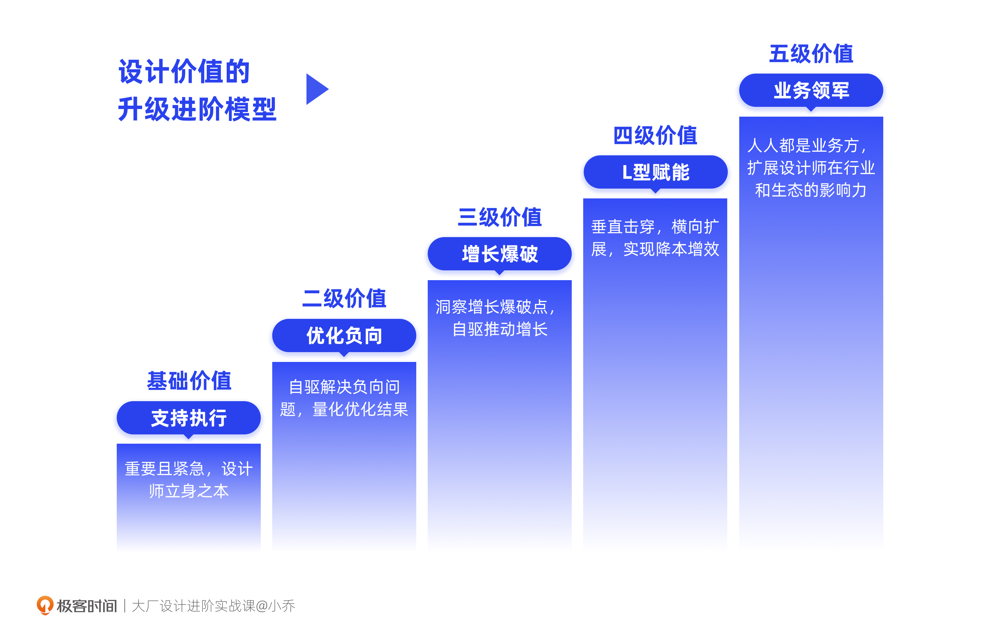

- 00 开篇词 升维思考，是设计师有效成长的第一步.md.html
- 01 业务周期：0-1-10-100-N的发展策略.md.html
- 02 商战模式：如何在商业竞争下突出重围？.md.html
- 03 市场洞察：如何找寻差异化撬动支点？.md.html
- 04 用户洞察：不懂用研的设计师不是好职场人.md.html
- 05 用户画像：是形式主义还是真的有效？.md.html
- 06 用户旅程：挖掘不同用户的核心机会点.md.html
- 07 职场晋升：看懂晋升的“游戏规则”.md.html
- 08 设计价值升级：五层进阶突破成长.md.html
- 09 基础价值 核心三原力：如何将需求转化为设计稿？.md.html
- 10 基础价值 第一性原理：从问题本质解决问题.md.html
- 11 基础价值 设计复盘：只是量化设计结果吗？.md.html
- 12 二级价值 负向网兜：如何全面发现负向问题？.md.html
- 13 二级价值 设计自驱：如何做好项目Owner？.md.html
- 14 二级价值 自驱合作：如何反内卷处理合作关系？.md.html
- 15 三级价值 增长误区：思维惯性陷阱和虚荣数据.md.html
- 16 三级价值 用户增长历程：AARRR是万能的吗？.md.html
- 17 三级价值 产品增长：如何做好产品创新？.md.html
- 18 三级价值 运营增长：如何自驱营销活动和投放？.md.html
- 19 三级价值 品牌增长 抢占心智，赢得人心红利.md.html
- 20 三级价值 增长实操：如何“步步为营”推动落地？.md.html
- 21 四级价值 L型赋能：让T型人才发挥更大价值.md.html
- 22 四级价值 “网状对比”解决共性痛点.md.html
- 23 五级价值 商业画布：设计师可以担任业务方吗？.md.html
- 24 五级价值 共创洞察：如何做好一次完善的workshop？.md.html
- 25 五级价值 领导力觉醒：写给新晋管理者.md.html
- 26 工作选择（上）：2B or 2C设计师？如何规划领域？.md.html
- 27 工作选择（下）：大厂 or 小厂？如何选择赛道？.md.html
- 28 人才地图：认知自我，成为高潜力人才.md.html
- 29 成长历程：如何从设计小白成长为团队负责人？.md.html
- 30 冰山模型：如何成为让面试官欣赏的“面霸”？.md.html
- 31 作品集指导：什么是面试官喜欢的作品集？.md.html
- 用户故事 什么是职场设计师进阶的正确姿势？.md.html
- 结束语 突破自我，成人达己.md.html
- 捐赠
00 开篇词 升维思考，是设计师有效成长的第一步
你好，我是小乔。很高兴我们有机会相识，一起踏上设计师的进阶之路。
也许你曾听说过我，也许你并不认识我。但这没有关系，重要的是，我们都在职场中有过相似的困惑，也都对成长有所渴望。
行业内熟悉我的设计师小伙伴们，会亲切地叫我“小乔姐姐”，你也可以把我当作一位“朋友”，希望我们也可以从新朋友变成老朋友，平等交流，一起进步。
你是否遇到过“设计师的成长瓶颈”？
我们先来聊一聊行业的变化。近几年，互联网正经历着巨大的变革和震荡，互联网人也面临着裁员潮，甚至连“金三银四”的招聘盛况都消失了。
这些现象并不是偶然，也并非仅仅是因为疫情，而是行业发展必然会经历的阶段。毕竟互联网行业已经度过了野蛮增长的人口红利期，整体在从增量市场走向存量市场。在互联网行业的下半场，政策监管也会更为严格。在经济受挫的情况下，裁员成为了企业节流的有效手段。
也许你会疑惑，互联网行业遭遇了打击，我还要在这里待下去吗？我会不会也遇到35岁危机呢？
其实从薪资待遇来说，由于互联网的增长率仍然高于传统行业，这就决定了我们依然具备薪资优势。所以，要不要在这里待下去并不是重点，重点在于“我们如何好好地待下去”。
从员工能力来说，即使是过去的快速增长期，设计师也是需要保持个人成长速度的。保持高潜力和高价值是我们待下去的条件。而保持高潜力的核心逻辑，是我们的成长速度可以超越年龄的增长速度，在同级别岗位中具备竞争力。
从宏观角度分析了行业变迁带来的影响后，我们再从内观的角度问问自己在工作中遇到的问题。
作为一名设计师，你是否有过以下困惑：
- 我工作非常努力，想取得更高的绩效，但在部门里始终是个小透明，并没有得到老板的重视；
- 设计这个职能没什么话语权，我想转岗做产品经理或战略分析师；
- 看到部门里有人待了8年都没晋升，到底怎样才能晋升；
- 日复一日的画图工作，让我失去了对设计的热情，也不知道该如何突破瓶颈。
作为一名设计组长或设计部门负责人，你是否也遇到过以下这些困难：
- 我是新任管理者，下属不服管怎么办，我该如何提升领导力；
- 工作流程中，设计总被排在下游，我该如何为设计团队争取到更大的话语权；
- 产品经理和运营都能更好地总结业务数据，我该如何让老板明白设计的价值；
- 下属都想争取更好的项目机会，但好项目有限，我应该如何分配。
在剖析了外部行业的问题，也内观了工作中的困难后，你可能会想：我的工作简直是内忧外患啊！
但每个行业不都是如此么？无论现在身处大厂还是小企业，提升自我竞争力，形成抗风险能力，都将是我们长期努力的方向。即便行业变迁，即便褪去大厂光环，我们都要成功地顺势而为。那么，如何才能有效成长，从被动淘汰变为主动选择呢？别担心，这些都会在我们的课程中得到解答。
这门课有哪些优势？
那么，让我们来聊聊，这套课程有什么优势，它又是如何帮助我们走上成长进阶之路的。
优势1：可实操的设计方法，符合当前行业发展
会主动点开这门课程的你，一定是位上进的设计师，我想你一定看过大量的文章，讲述各种各样的设计方法论。
比如，你也许听过AARRR，但却不知道这个模型适用在什么产品中；也许你听过用户画像，却觉得这只是形式主义，没有真正发挥它的作用；也许你听过设计价值，却不知道什么是设计价值，该如何量化……
我们平时接触大量零散资料时，往往会有两个痛点：
- 痛点1：方法停留在理论层面，实操困难；
- 痛点2：理论过时，不适用于现在的行业发展。
针对难以实操的痛点，我会采用理论方法+实际案例的方式，将过程一步步揉碎，演示推导逻辑。可以说，这套课程的亮点就在于认知+理论+实操，三位一体，缺一不可。即使是以认知为主的课程，也会用丰富的商业案例和设计案例，向你描述清楚。
针对理论过时这个痛点，我会分析一些经典方法在当今互联网时代中的优缺点和适用场景。得益于过往相对丰富的项目经历，我对甲乙方、大小厂、国内外等不同类型的公司，以及电商、社交、国际化、新科技、线下零售、2B等不同行业领域，都有一定的理解和实战经验。我会将自己的一些独家方法论分享给你，这些都经历过大量成功案例的验证，也符合当前的行业发展。
这套课程，最初是我利用个人的周末时间，为我团队的同学们写的设计师成长课程，所以根据不同阶段的成长需求进行过调整，以确保不同工作年限的同学都能有所吸收，也欢迎你向我提出优化建议。
优势2：架构完整，将成长所需一网打尽
整套课程包含“设计策略”、“设计实战”和“职场通识”三大章节，为我们战胜“内忧外患”的工作困难，提供了设计师成长最需要的3大能力：
设计师成长 =升维认知X策略思维X实战经验

第一模块：设计策略
许多设计师虽然画图技法优秀，但定位更像美工，不懂业务，也不具备上层思维，只能等着承接他人的需求。而我们只有具备了设计策略思维，才能突破成长瓶颈，获得参与度和话语权。
这一模块的课程会帮助你建立业务全局观，从商业市场和用户需求两方面洞察机会点，重在培养“升维认知”和“策略思维”。
首先，我会带你分析商业市场对于设计策略的影响，你会发现，听起来遥远的商战模式、业务发展周期等，都会影响我们制定设计策略。接着，我会和你一起探讨市场与用户的洞察方法，并结合案例，演示实战过程。
这一模块就像一个装备库，帮助我们在进阶成长的过程中，获得化被动为主动的前提。
第二模块：设计进阶实战
如果说第一模块是提升认知和制定策略的储备，那么第二模块就是它们真正发挥作用的实战路径。
在这一模块，我根据设计价值不断提升的过程，将上升路径分为了5个阶段。
- 基础价值：做好业务需求支持，通过对需求的理解，提供更完善的设计解法；
- 二级价值：主动自驱设计项目，优化负向体验；
- 三级价值：推导撬动业务的差异化机会点，实现业务增长；
- 四级价值：在垂直深耕一个成功项目后，横向赋能更多业务，实现价值杠杆；
- 五级价值：设计师独立成为业务方，为行业带来改变。
我将与你一起探讨这5种设计价值，在丰富的实战案例中掌握更符合当今时代发展的设计方法，实现业务增长和个人成长，不断突破自我价值。

第三模块：职场通识
实战经验不只依赖于扎实的设计专业硬能力，更需要软实力和判断力的加持。
在这一模块，我将与你分享一些职场的“游戏规则”，软硬能力相结合，才能助力我们事半功倍。相信这一章节对你以后选择工作、规划成长方向、面试、做作品集等方面，都能有所帮助，获得更高效率的成长。
希望你在职业的不同阶段，都能反复回来看看这套课程。在我们具备不同职场成熟度和认知理解时，对待事物的看法也会更加深刻。
小乔是谁？
聊到这里，请允许我做一个简单的自我介绍，希望这样可以提升你对这套课程的信心。
我叫小乔，目前在一家互联网大厂担任设计负责人，带领UX、创意、品牌、用研相关项目与团队。由于我所在的公司并不鼓励个人对外拿公司作为背书，也不鼓励对外使用真名，因此我们就不在此明说了。
我曾经作为业务方，负责过的设计自驱项目荣获“哈佛商业评论-2020中国新增长数字化革新榜”“2020年度环球金趋势奖年度赋能创新奖”。我在在职期间申请专利20多项，也是2012年红点设计奖、2015年IF设计奖得主。我曾受邀在青年创新创意创业峰会、PCon全球产品创新大会、我们的设计日记等行业分享中担任演讲嘉宾，同时也是2018年阿里巴巴UCAN大会的组织者之一。
我在设计行业已工作十余年，曾任职于华为、阿里、得物等企业。也许你并不认识我，但你可能用过我负责或参与过的产品。比如淘宝App、淘宝心选、天猫双11、淘宝年货节、淘宝造物节、得物App、得物AR试穿等，这么一看，我们的关系是不是更近了一步呢？
我想，我们应该还有一个共同点，就是渴望成长。我想拓宽眼界，所以在工作不错的情况下依然选择留学，又从咨询行业转战互联网，这些丰富的经历让我具备了更为全局的视角，掌握了不同的企业模式和行业知识。世界那么大，值得我去看看，哪怕我曾为此降薪跳槽、损失股票，但成长才是最大的收入。
在这些丰富的经历中，我有过迷茫，有过成长滞缓期，有过没人带的时候，有过心累想退休的冲动；我也有过年年高绩效，受老板重用，受团队同学爱戴，快速晋升的阶段。随着职场成熟度的提升，我也逐渐看清了“游戏规则”。
相信许多同学和我过往的经历相似，也许没有遇到好的导师，也许对职场规则不够理解，也许遇到了拖后腿的猪队友等等。有多少原本雄心壮志的设计师，在每天日复一日的螺丝钉工作中，逐渐丧失了对设计的热情。我们钻着努力认真的牛角尖，却在稀里糊涂和信息不对等中白白浪费了三五年，但是不间断的成长对于职业生涯来说又那么重要，因为只有能力的增速超越年龄的增速，我们才具备高竞争力。
我想将自己过往十余年的“血泪史”分享给你，相信这些摸爬滚打的经验，一定可以帮你少走弯路。我们只有获得了更高的全局观，升维思考，才能更好地处理日常工作，降维打击。希望这套课程带给你的作用，可以远远超过你在大厂工作3年的成长。
写在最后
当我们从不懂业务、被动接受画图需求，升维成具备业务全局观和设计策略思维的设计师时，就开启了设计师的进阶之路。当我们提升自己的竞争力，逐渐成为团队中那个难以被替代的人时，晋升、涨薪就是顺其自然的事情，更重要的是，我们收获了成长。
最后用刘润老师的话结束我们的开篇词：在一个真正有价值的公司，跟一个值得跟的老板，和一群志趣相投的人在一起。在年轻时，把成长当作最大的收入。
接下来，让我们一起开启第一节课吧。
© 2019 - 2023 Liangliang Lee. Powered by gin and hexo-theme-book.